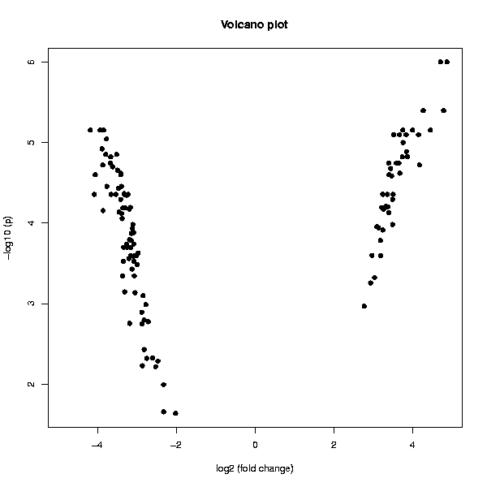

Creates a volcano plot on the basis of existing information.
This tool creates a volcano plot from data which contains genewise p-values and fold changes. The values can be created by by using the empirical Bayes method when running for example the tool Statistics /Two group tests).
A PNG image containing the Volcano plot:
